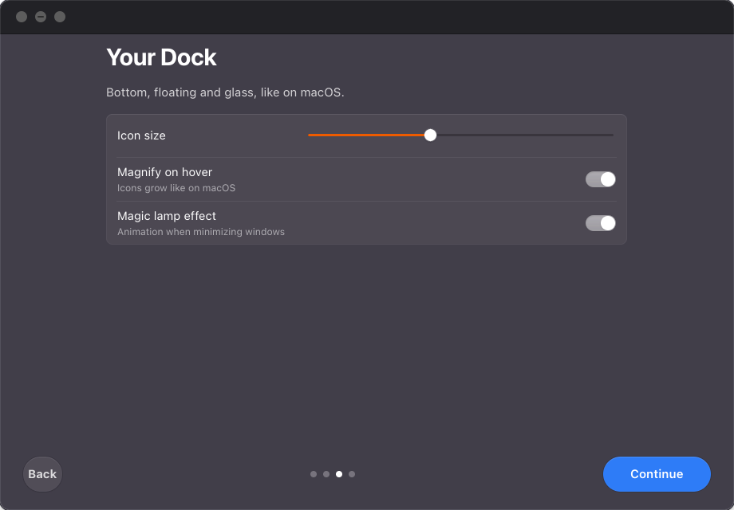
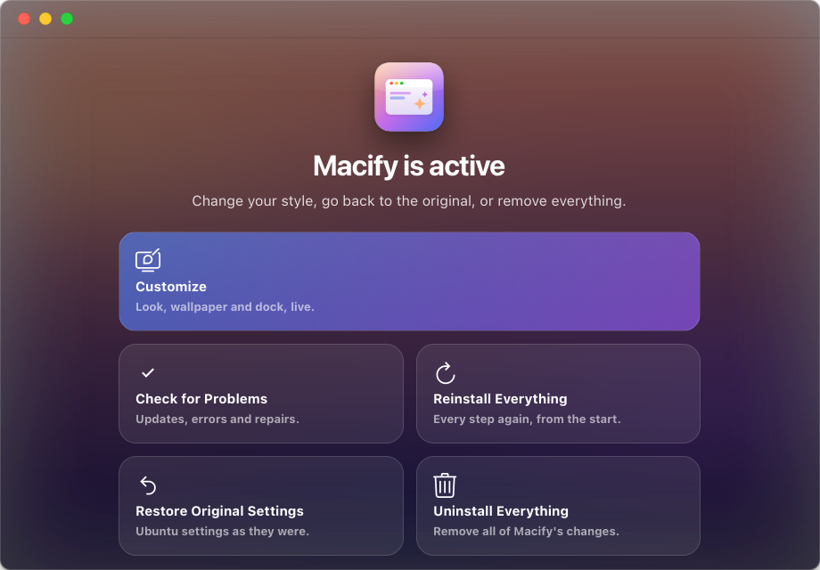
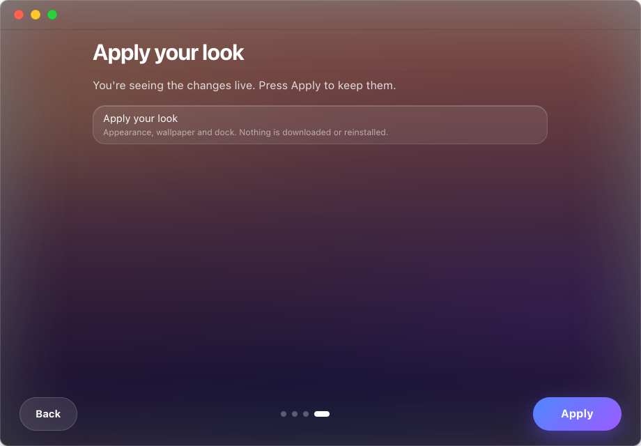
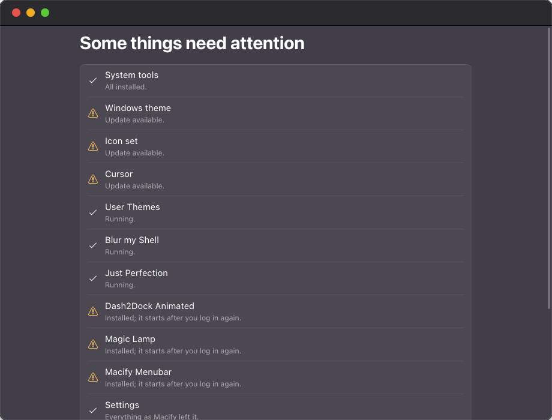

Everything a Mac looks like
Macify installs and configures each piece for you, shows real-time progress, and keeps a backup of your original settings.
Boot and login
The progress bar follows your real startup and ends with “Welcome”; at shutdown it empties with “See you soon”.
Windows
Traffic-light buttons and macOS title bars, light or dark, for GTK 3 and GTK 4 apps.
Menu bar
File, Edit, View, Window and Help menus for any app. Battery (with Energy Mode), Wi‑Fi and Sound each open their own menu; Control Center keeps only the rest.
macOS touches
Volume and brightness show a glass card at the top right. Screenshots slide in as a thumbnail — already copied, paste with Ctrl+V.
Live Activities
A bubble at the top for music, charging and connection. Click it for Now Playing with controls and volume.
Apps view
Show Apps opens over frosted glass, without workspaces, like the Apps view in macOS 27.
Animated dock
Floating glass dock with magnification, bounce on launch, magic-lamp minimize and red notification badges.
Icons
A macOS icon set. Apps without one get a new icon in the macOS shape — automatically, even later.
San Francisco fonts
Uses your SF fonts or downloads them from Apple's developer site. Never bundled.
Wallpapers
Eight original 4K wallpapers in a gallery, or your own photos. The accent color follows your choice.
Doctor
Finds outdated or broken pieces — and new Macify versions — and fixes them in one click.
Software Update
Checks GitHub for new versions, shows what's new and installs the verified package for you.
Customize, live
Change look, wallpaper and dock and see it on your desktop instantly. No reinstall.
Install
One command downloads the latest release, checks its fingerprint, and installs it with apt.
Or install it by hand
- Download the latest .deb.
- In a terminal, in the download folder:
sudo apt install ./macify_*_all.deb - Open Macify from your apps, follow the steps and press Install.
- Restart when asked.
Staying up to date
- Macify checks GitHub for new versions once a day.
- Open Macify → Check for Problems.
- Press Fix All: it downloads, verifies and installs the new version.
Take a look




Safe by design
Backup first
Every GNOME setting is saved before it changes. Restore puts them back.
Clean removal
Uninstall Everything removes themes, icons, extensions, fonts and the boot and login screens.
One password, root-only code
System screens run through a root-owned helper that only executes code from root folders.
Verified downloads
Over HTTPS from official sources; updates are checked against GitHub's SHA-256 fingerprint.
No kernel changes
No modules or boot parameters. Only the boot image is refreshed to include the boot theme.
Nothing exposed
Macify opens no network ports and runs no system services — only two small user services.
Which apps take the macOS style
Apps follow the system look in different ways depending on how they are built and packaged.
| Kind of app | Window buttons & theme | Icon |
|---|---|---|
| GTK apps from apt (Files, Settings, Terminal…) | Yes | Yes |
| Flatpak apps | Yes — Macify grants read access to the theme | Yes |
| Snap apps | Yes — Macify puts the theme inside each snap, also for snaps you install later | Yes |
| VS Code, Firefox | Yes — set up by Macify | Yes |
| Chromium browsers, Electron and Flutter apps | They draw their own title bar, so no outside theme can change it | Yes |
What's new
Read live from GitHub Releases.
Questions
Does it slow Ubuntu down?
The animated dock costs about 5% of one CPU core while idle. Macify's background upkeep runs in under a second, only at login and when apps are installed.
Can I go back to plain Ubuntu?
Yes. Open Macify and choose Restore Original Settings or Uninstall Everything, then sudo apt remove macify.
Do I need my own Apple fonts?
No. If you don't have them, Macify downloads San Francisco from Apple's developer site at install time.
My login screen looks wrong — how do I recover?
Press Ctrl+Alt+F3, sign in, run sudo /usr/lib/macify/macify/data/root/macify-root.sh revert and restart.
Is it affiliated with Apple or Canonical?
No. macOS is a trademark of Apple Inc. Macify is an independent open-source project.